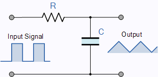
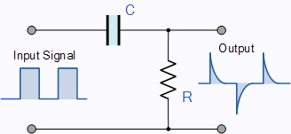

Despite the early warning that ’it was not possible to separate the change into resistance and capacity components’ [47], a commonly accepted truism was that neurons, in some sense, behave as electrical oscillators. HH introduced the idea explicitly that the electrically equivalent circuit of a neuron is an oscillator. We must also add the invention from about three decades later: ”Neurons ensure the directional propagation of signals throughout the nervous system. The functional asymmetry of neurons is supported by cellular compartmentation: the cell body and dendrites (somatodendritic compartment) receive synaptic inputs, and the axon propagates the action potentials that trigger synaptic release toward target cells. Between the cell body and the axon sits a unique compartment called the axon initial segment. The AIS was first described 50 years ago [i.e., nearly two decades after HH published their study], and its molecular composition and organization have been progressively elucidated during the following decades. …. Recent years have also brought crucial insights into the functions of the AIS: how ion channels at its surface generate and shape the action potential.” [52] We provide the physics and mathematics of how AIS shapes the action potential (or more precisely, we show what an important role it plays in forming AP).
Inventing AIS changed the viewpoint of neuroscience [52], a half century later, after setting up the commonly accepted model by HH. ”The AIS is located at the proximal axon and is the site of action potential initiation. This reflects the high density of ion channels found at the AIS. … The summation of synaptic inputs gives rise to action potentials at the AIS, a 20–60 long domain located at the proximal axon/soma interface that has a high density of voltage-gated ion channels.” As discussed in [53], see also their Figure 1, the structure of the AIS is known to the most minor details. As the illuminating investigations in 2008 [50] revealed, the AIS has very dense ion channels. That is, from an electrical point of view, those parallelized channels can be abstracted as a discrete conductance (or resistance) between the membrane and the axon. The membrane itself can be abstracted as a distributed condenser with no resistance. This model is in contrast with the viewpoint of biophysics, that the membrane plus AIS is considered a distributed element, where the capacitor and condenser cannot be separated. The current model is the result of projecting the physical processes in the resting state to the transient state. Notice the important point: ”Neurons are also anatomically polarized, as they can be subdivided into a somatodendritic input domain and an axonal output domain” [49]; providing direct evidence that (unlike in HH’s model) the input and output currents (and voltage time derivatives) are independent.
| The RC Integrator | The RC differentiator |
| Low Pass Filter | High Pass Filter |
| Resting state | Transient state |
 |
 |
| (Mostly) resting state | (Mostly) transient state |
| Ion channels in the membrane | Ion channels in the AIS |
In our model, the AIS gets part of the membrane, and this leads to crucial changes. (BTW, the name is slightly misleading: the AIS is part of the neuronal oscillator, and it forwards a traveling potential wave to the axon instead of belonging to it.) ’Although by definition a neuron must have an axon to assemble an AIS, the relationship between AIS assembly and axon specification in vivo has not been determined yet’ [49]. Anyhow, a neuron can be abstracted (in the disciplinary view of electricity) as comprising a resistor-like and a capacitor-like component. However, in the resting and the transient states, they are combined in different ways.
In the resting state, we can model neurons as a parallel circuit (see the ”integrator” in Table 6.2), where ”random” currents flow in and out. Practically, the output voltage is constant (the resting potential): the ion channels and pumps are distributed over the membrane’s surface, and due to the low speed of currents, at low local voltage gradients, the AIS is not involved. Only the synaptic inputs cause a measurable gradient on the AIS. In this native state, there is no gradient; in this sense, it is similar to the case of clamped operation, where the gradient is (apparently) suppressed by the feedback. HH did not see any structural elements on the membrane, so logically, they modeled it as a distributed resistor and capacitor, which really has resemblance with a parallel oscillator. However, they made a wrong choice of the circuit type, and their choice (likely due to inertia) was repeated in good textbooks such as ([6] Figure 3.1 or [37] Figure 1.1), and it is a commonly accepted fallacy even today [4].
In the transient state, the high-transmission ion channels in the AIS (high conductance ) replace the low-transmission ion channels (low conductance ) in the membrane’s wall, and the rush-in current flows out entirely on the AIS (for the model, in this state, we omit the low-transmission ion drain). Those two elements form a serial circuit (see the ”differentiator” in Table 6.2) that acts as a damped oscillator and produces a current pulse, known as AP. Neuroscience mistakenly claims it is a parallel circuit; that statement is valid only in the resting state. However, the number and intensity of the ’resting’ ion channels in the membrane’s wall are insignificant for producing AP, so we use the approximation that only the ’transient ion channels’ in the AIS are active when generating an AP.
In the electrical view, the process can be modeled as follows: a sudden voltage gradient (see Figure 6.12 middle inset) appears on the membrane (as a discrete capacitor), and a current flows out (see Figure 6.12 bottom inset) through the serially connected ion channel array (as a discrete resistor). The neuron forms a simple serially (not parallelly, as assumed by Hodgkin and Huxley [17] and mistakenly claimed by neurophysiology) connected oscillator. For the physical and mathematical description, see section 6.3.3, furthermore, section 4 in [57]; for its algorithmic specifics [58], for further details [56]. Notice that the difference between the rush-in and the resultant gradients emphasizes the role of the finite resources: without the AIS, no turn-back of the resultant gradient would occur.
The fundamental difference between the parallel and serial circuits is that the parallel circuit cannot produce output voltage with opposite sign. As discussed, the capacitive current, which by definition changes its direction and so generates an opposite voltage on the resistor represented by the AIS, perfectly describes the so-called ”hyperpolarization”. It is not the effect of a current: the resting ion channels do not have sufficient conductance. Not knowing about the AIS leads to assuming that the resting ion channels work also as transient channels (in other words, assuming a parallel circuit instead of the serial one, furthermore, that the output current flows through the membrane instead of the axon). Some current certainly exists; for the magnitude of currents during AP, see [55].
The shape of the output waveform depends on the ratio of the pulse width to the time constant. When is much larger than the pulse width, the output waveform resembles the input signal, even with a square wave input. (In the case of the neuronal oscillator, the shape of the front side of the spike is similar to the one derived for the rush-in current, while the back side is very prolonged.)